МЕТАНОЯ
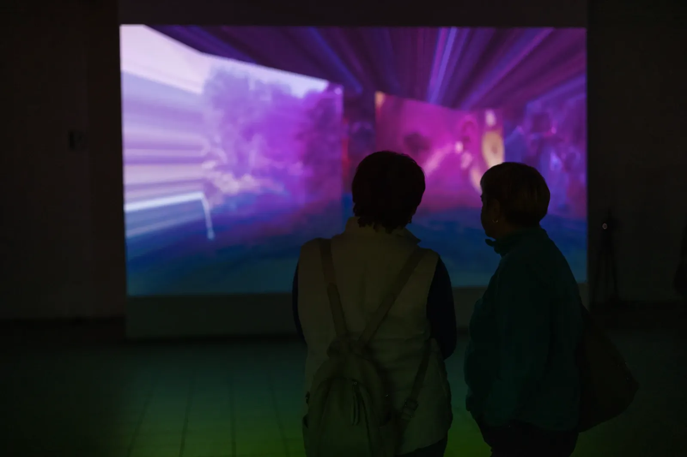
«МЕТАНОЯ» — другий фестиваль сучасного цифрового мистецтва, організований ГО «Креативна область Мислення» у Полтаві.
Фестиваль досліджує трансформацію людського мислення, сприйняття та внутрішнього стану в умовах постійних змін. У центрі уваги — людина, яка намагається осмислити нову реальність, переоцінити власний досвід і знайти інші способи взаємодії зі світом.
Назва METANOIA походить від грецького поняття, що означає глибоку зміну мислення, світогляду та внутрішньої позиції.
Галерея
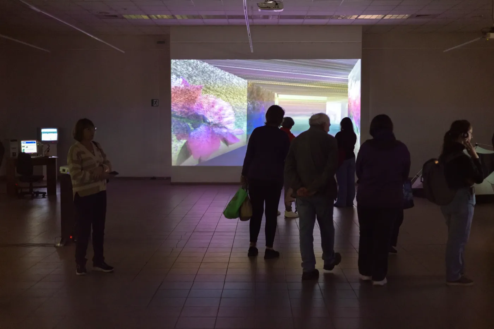
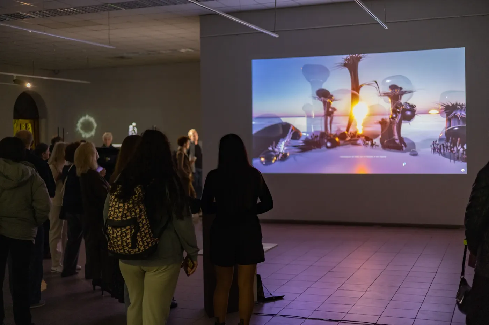
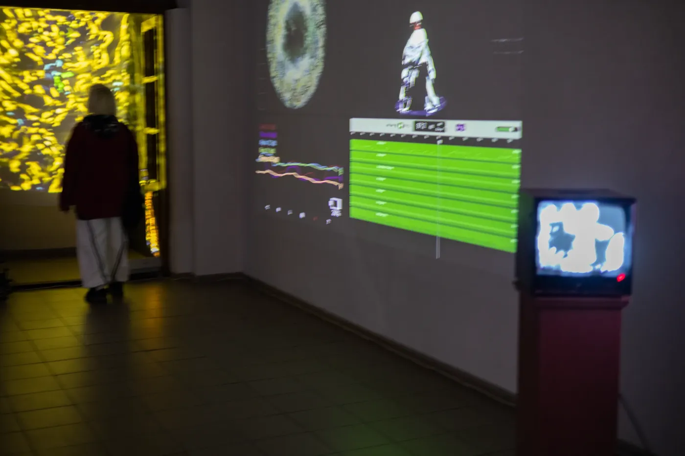
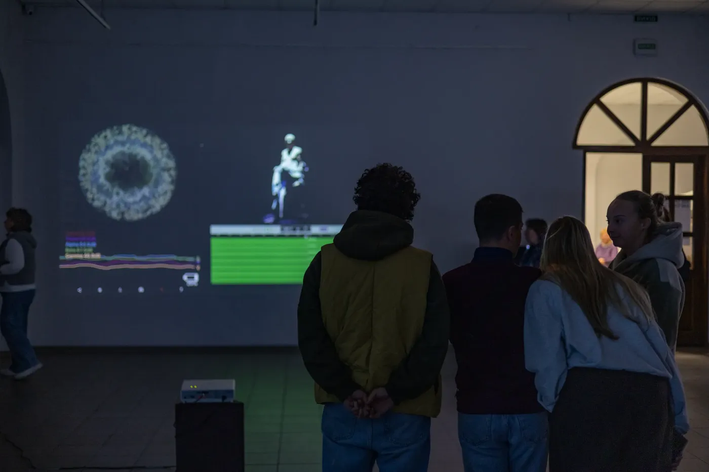
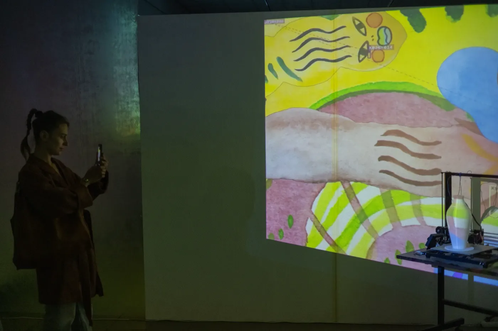
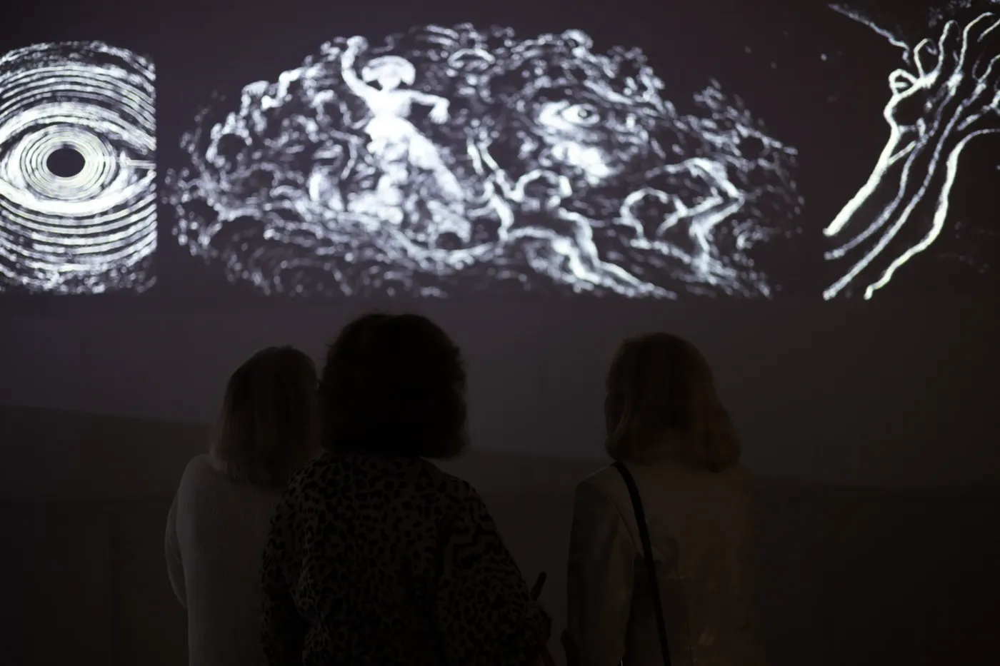
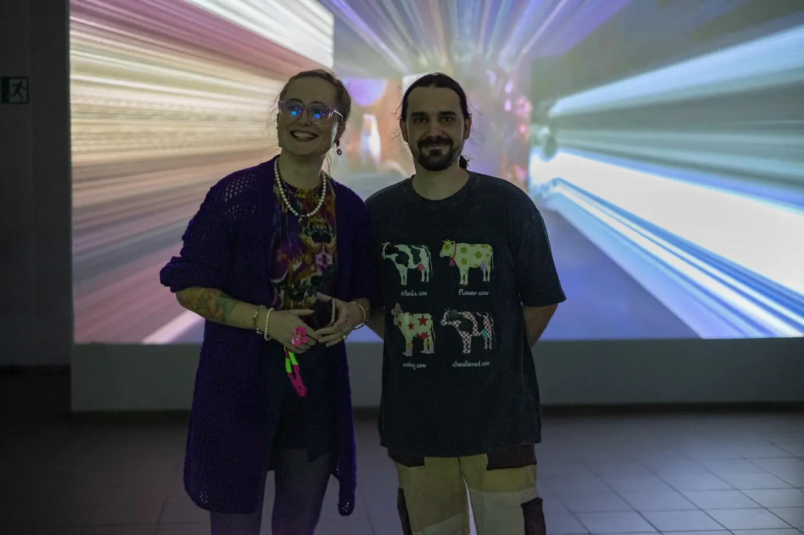
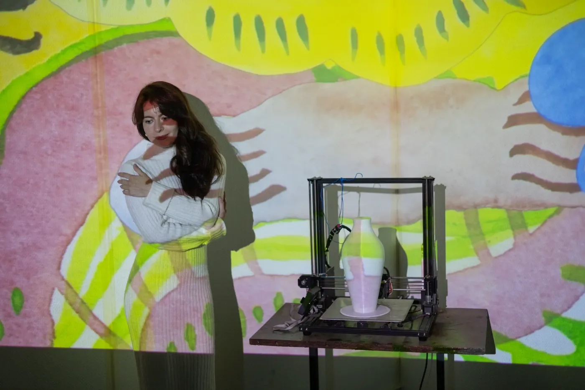
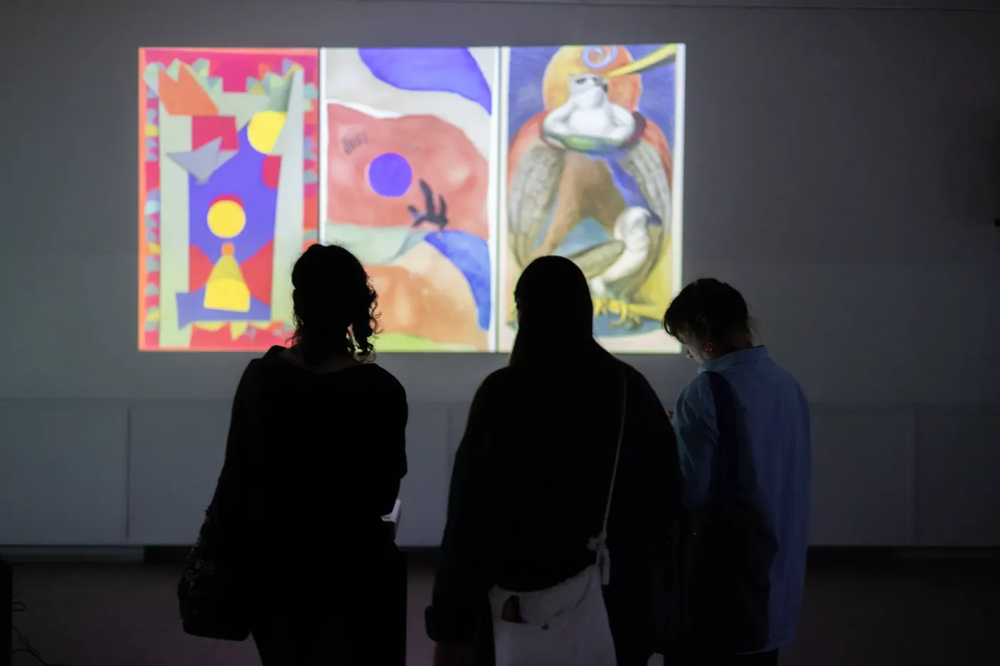
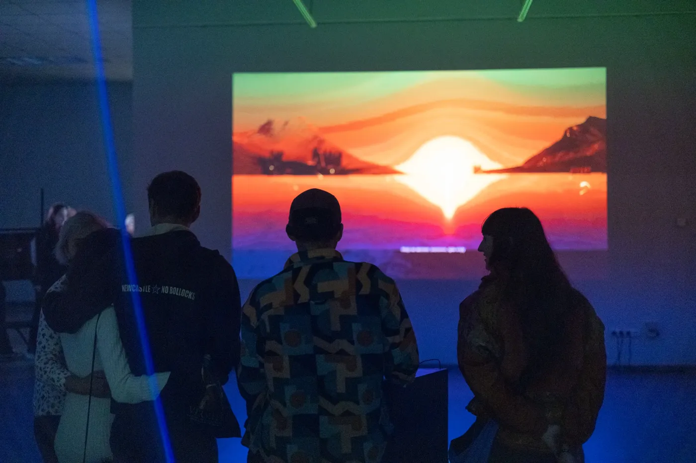
Концепція та підхід
Війна, нестабільність і постійна трансформація суспільства змінюють не лише зовнішні обставини, а й спосіб, у який людина сприймає себе та навколишній світ.
«МЕТАНОЯ» звертається до цього процесу через сучасне цифрове мистецтво, використовуючи технології як художній інструмент, середовище та спосіб дослідження людського досвіду.
Водночас фестиваль не обмежує художні висловлювання безпосередньо воєнною тематикою. Його поле значно ширше: внутрішні зміни, ідентичність, пам'ять, сприйняття реальності, вразливість, адаптація та пошук нових сенсів.
Головне питання фестивалю: ким ми стаємо, коли світ навколо нас постійно змінюється?
Виставкова програма
Фестиваль представив роботи 28 митців з України та інших країн.
Експозиція розгорнулася на другому поверсі Полтавського художнього музею (галереї мистецтв) і об'єднала різні підходи до роботи з цифровими технологіями та сучасними медіа.
Мистецькі висловлювання учасників формували багатоголосий простір, у якому особистий досвід, технологічні експерименти та рефлексія над сучасністю взаємодіяли між собою.
Місце та контекст
Виставка відбулася в просторі Полтавського художнього музею — середовищі, де зустрічаються різні мистецькі традиції та способи осмислення сучасної культури.
Розміщення фестивалю в музейному просторі стало можливістю представити цифрове мистецтво як частину актуального мистецького процесу та розширити уявлення про форми його існування й експонування.
Організація та кураторство
Організатор — ГО «Креативна область Мислення».
Куратори фестивалю — Вартан Маркар'ян та Роксолана Дудка.
Значення для культурного середовища
«МЕТАНОЯ» продовжила розвиток сучасного цифрового мистецтва в Полтаві, започаткований фестивалем «Контури відновлення. Міжпростір» у 2025 році.
Другий фестиваль розширив географію мистецької взаємодії, залучив міжнародних учасників і запропонував нову кураторську оптику для осмислення досвіду людини в умовах сучасних суспільних трансформацій.
Для ГО «Креативна область Мислення» цей проєкт став наступним етапом формування незалежної культурної платформи, відкритої до експерименту, міждисциплінарності та міжнародного мистецького діалогу.
МЕТАНОЯ — це не лише зміна обставин. Це зміна способу бачити, мислити та бути у світі.
Інші проєкти ГО «Креативна область мислення»